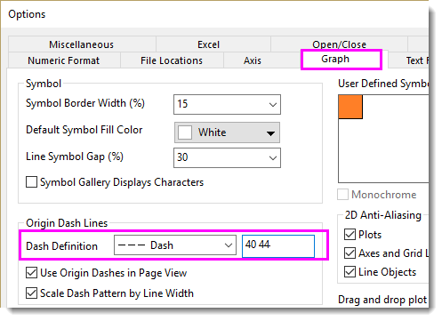

FAQ-818 Warum funktionieren gestrichelte Linien nicht in meinem Linien-Punktdiagramm?
Dashed_lines_drawn_incorrectly_line_symbol_plot
Letztes Update: 10.09.2023
Einige Kunden haben berichtet, dass die Linie, wenn Sie in ihren Linien-/Punktdiagrammen den Linienstil auf Striche einstellten, nicht gestrichelt, sondern durchgezogen gezeichnet wurde. Manchmal fügten sie hinzu, dass sie die Symbolgröße auf 0 gesetzt hatten, dies aber nicht das Problem löste.
Generell wird dieses Problem durch eine Kombination dieser Faktoren verursacht:
- Eine hohe Dichte gezeichneter Punkte.
- Die gestrichelte Linie ist sehr breit (1,5 oder mehr).
- Wenn Sie ein Linien-Punktdiagramm brauchen, wählen Sie im Menü Einstellungen: Optionen. Aktivieren Sie im Dialog Optionen die Registerkarte Grafik. Wählen Sie in der Gruppe der gestrichelten Linien von Origin Ihren Strichtyp aus der Auswahlliste Linienart und geben Sie größere Zahlen im Kombinationsfeld ein, z. B. "40 44".
- 
- Versuchen Sie, Ihre Linienbreite auf einen kleineren Wert zu setzen.
- Wenn Sie die Symbolgröße auf 0 festlegen, überlegen Sie, ob Sie wirklich ein Linien-/Punktdiagramm brauchen. Wenn ein Liniendiagramm ausreicht, setzen Sie den Diagrammtyp einfach auf Liniendiagramm (unten im Dialog Details Zeichnung). Dadurch wird das Problem, dass eine gestrichelte Linie durchgezogen gezeichnet wird, üblicherweise behoben, unabhängig von der Linienbreite.
- In der Vergangenheit wählten Anwender manchmal das Punkt-Liniendiagramm, weil für Liniendiagramme keine Ankerlinien verfügbar waren (behoben seit Origin Version 9.1+). Setzen Sie die Symbolgröße nicht auf 0. Befolgen Sie stattdessen die Anweisungen in dieser FAQ zum Entfernen von Zeichnungssymbolen aus Ihrem Linien-/Punktdiagramm.
Schlüsselwörter:gestrichelt, Striche, gestrichelte Linie, Linie + Symbol, Linien-Punktdiagramm, Linienstil, Abstand zum Symbol